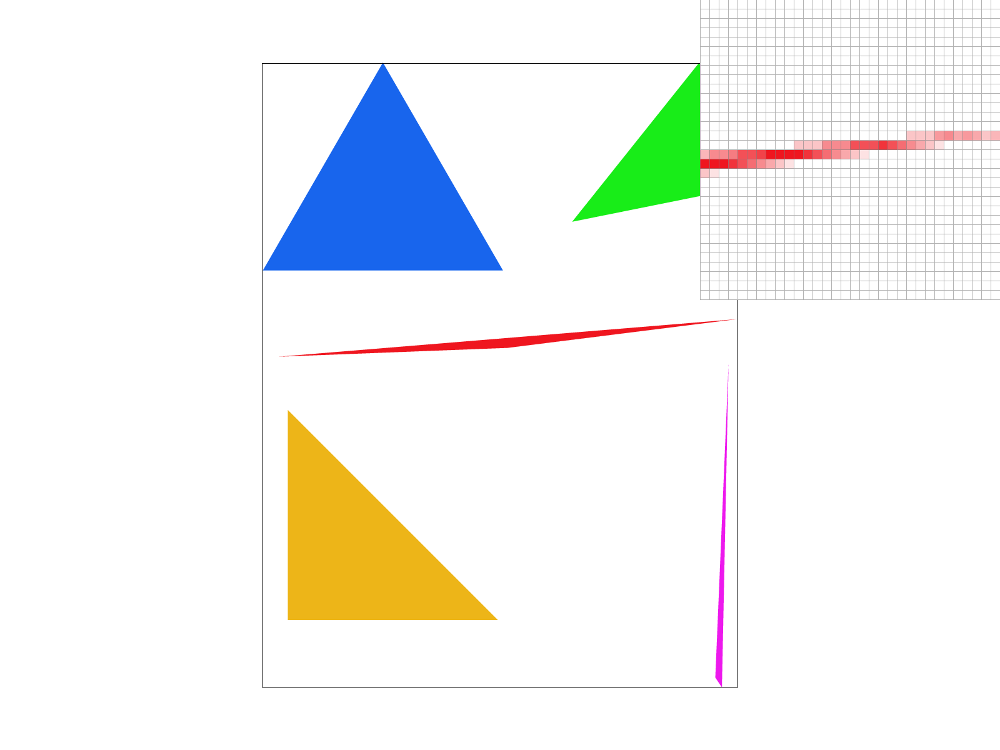
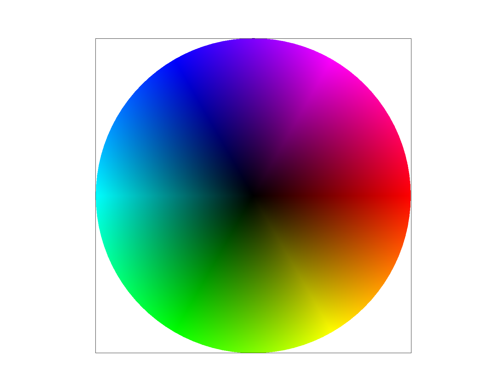
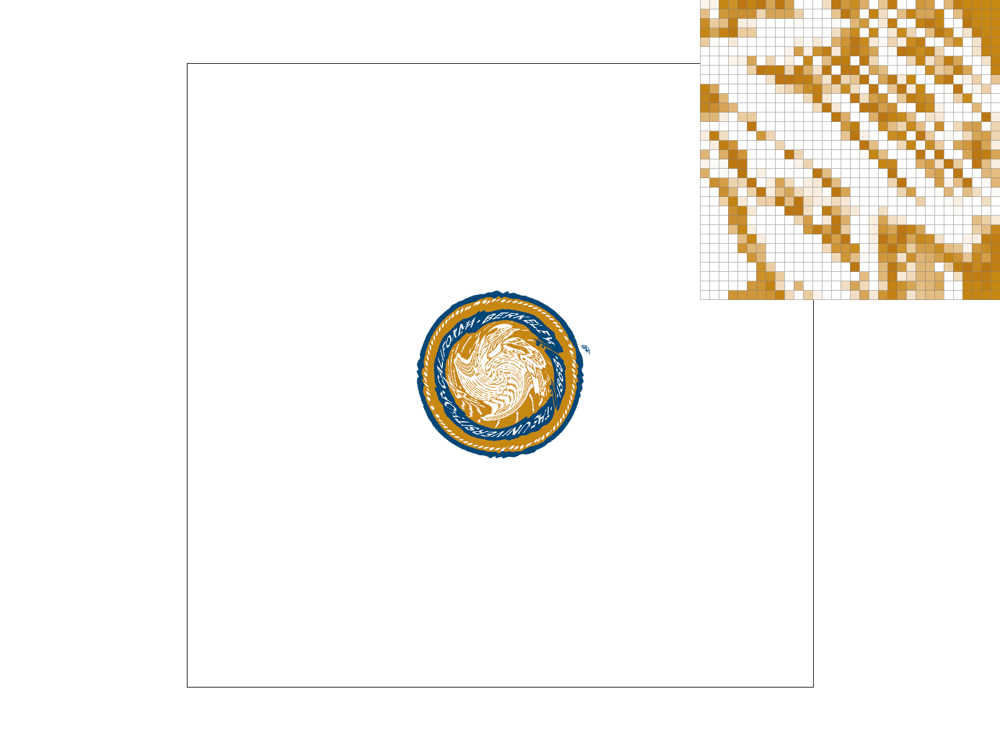
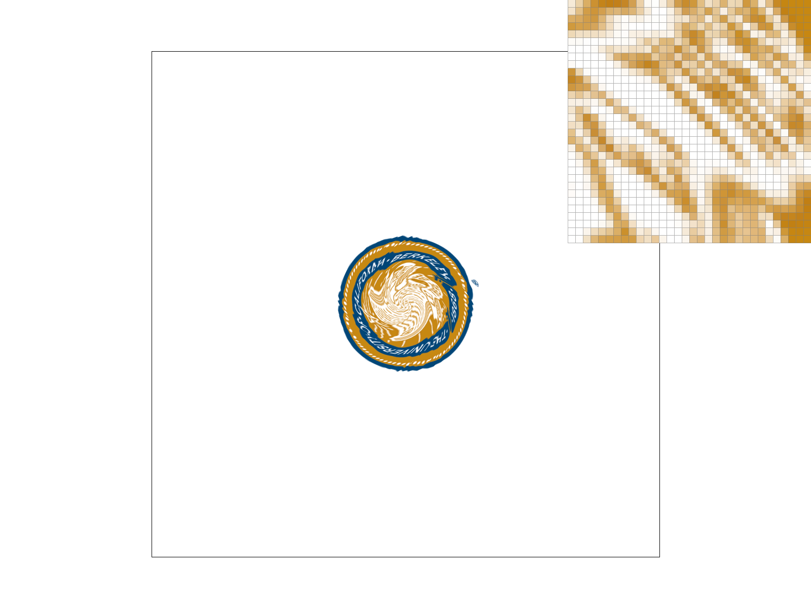
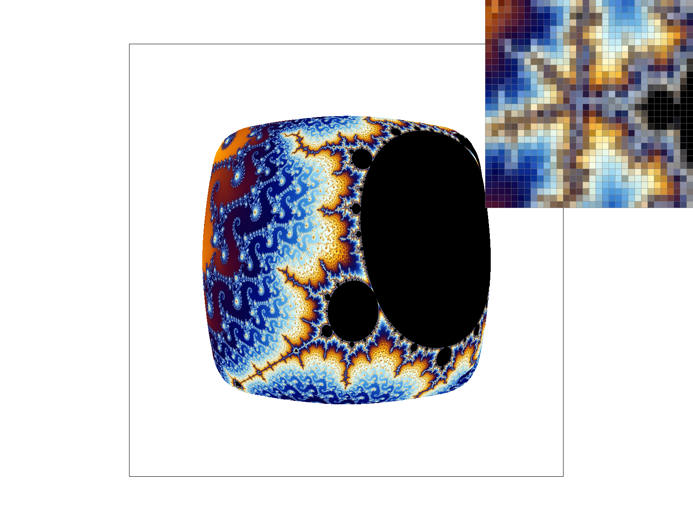

CS184 Spring 2026 Homework 1 Write-Up
Link to GitHub repository: github.com/cal-cs184-student/hw-webpages-D0ctorB
Overview
In this homework, I implemented a software rasterizer from scratch. The pipeline takes raw 2D vector graphics (SVG files) and converts them into an array of pixels on the screen. The project evolved in stages: beginning with basic triangle drawing and matrix transformations, progressing to supersampling for spatial anti-aliasing, and culminating in a full texture mapping engine that supports barycentric coordinate interpolation, bilinear pixel filtering, and trilinear mipmap level sampling.
The most interesting takeaway from this project was seeing how purely mathematical concepts—like taking the 2D cross product of edges or calculating the rate of change of coordinate differentials—directly translate into beautiful, smooth visuals and eliminate harsh digital artifacts.
Task 1: Drawing Single-Color Triangles
To rasterize a triangle, the algorithm must determine which screen pixels fall strictly inside the mathematical boundary of the triangle's three vertices. My implementation takes the following approach:
- Bounding Box: To optimize performance, I calculate the minimum and maximum X and Y coordinates among the three vertices. The algorithm only iterates over pixels within this localized box rather than the entire screen.
- Point-in-Triangle Test: For each pixel in the bounding box, I sample its exact center by adding
0.5to its integer coordinates. I then use the 2D Cross Product (Edge Equation) test against all three directed edges of the triangle. - Winding Order: A point is considered "inside" if it lies on the same side of all three edges. To ensure triangles render correctly regardless of whether their vertices were defined in clockwise or counter-clockwise order, my code checks if the edge test results are all non-negative or all non-positive.
Task 2: Antialiasing by Supersampling
Algorithm and Data Structures
To implement supersampling, I conceptually expanded the internal resolution of the rasterizer. The primary data structure is a 1D vector called sample_buffer. Instead of allocating one color per screen pixel, the buffer is dynamically resized to hold width * height * sample_rate colors.
During rasterization, I divide each screen pixel into a \( \sqrt{\text{sample\_rate}} \times \sqrt{\text{sample\_rate}} \) sub-grid. The point-in-triangle test is executed for the center of every sub-pixel. Finally, in the resolve_to_framebuffer() step, the pipeline averages the colors of all sub-pixels corresponding to a single screen pixel before pushing the final 8-bit RGB value to the display.
Why Supersampling is Useful
Supersampling is a spatial anti-aliasing technique that reduces high-frequency "jaggies" (staircase artifacts). Because standard rasterization forces a pixel to be strictly 100% inside or 100% outside a shape, diagonal edges look harsh. Supersampling averages the coverage, effectively blurring the edge to create smooth visual transitions.
Pipeline Modifications
- Memory Management: Updated buffer resizing functions to scale dynamically with the
sample_rate. - Rasterization: Added nested loops to calculate fractional coordinates and sample sub-pixel centers.
- Resolving: Rewrote the framebuffer resolution to average the values of the high-resolution buffer into standard RGB.
- Primitives: Modified
fill_pixel()to write the same color to all sub-pixels of a coordinate so points and lines do not become transparent during the averaging phase.
Effects of Different Sample Rates
As the sample rate increases, sharp corners and edges gain access to more intermediate blending colors. At a sample rate of 1, a boundary pixel has 0% or 100% coverage. At a sample rate of 16 (a 4x4 grid), a boundary pixel can have 17 different gradient states. This allows sharp corners to gracefully fade into the background rather than being abruptly truncated.
 |
|
|

|
|
Task 3: Transforms
I implemented 2D geometric transformations using homogeneous coordinates and 3x3 matrices. This mathematical approach allows translation, scaling, and rotation to all be represented as matrix multiplications, making it easy to chain operations together.
For my updated my_robot.svg, I altered the cubeman's proportions and colors to feature a blue torso, yellow head, and green limbs. To make him wave, I used hierarchical transforms. By grouping the right arm and applying an upward rotation at the shoulder, the entire arm pivoted. I then nested a second group for the lower arm with an additional local rotation. Because it was a child element, it inherited the shoulder's rotation and added its own to successfully bend the elbow!
Task 4: Barycentric Coordinates
Barycentric coordinates are a triangle-specific coordinate system that allows us to express any point as a weighted combination of the triangle's three vertices. For any point \( P \), its location can be defined by three scalar weights: \( \alpha, \beta, \gamma \).
\[ P = \alpha V_0 + \beta V_1 + \gamma V_2 \]
These weights represent the point's proportional distance from the edges opposite to each vertex. If a point is inside the triangle, all three weights are positive and sum exactly to 1.
We use barycentric coordinates in rasterization to smoothly interpolate attributes defined at the vertices across the surface of the triangle. For example, if we assign Red, Green, and Blue to the three corners, multiplying those colors by the barycentric weights at each pixel creates a perfectly smooth color gradient.
|

|
 |
Task 5: "Pixel Sampling" for Texture Mapping
Texture mapping involves applying a 2D image (texture) onto screen geometry. Because screen pixels rarely align 1:1 with texture pixels (texels), we use pixel sampling to determine what color a screen pixel should adopt based on its interpolated \( (U, V) \) coordinate.
Nearest vs. Bilinear Sampling
- Nearest Sampling: Scales the \( (U, V) \) coordinate by the texture resolution and rounds to the nearest integer, fetching that single texel's color. It is computationally fast but creates harsh, blocky artifacts when the image is magnified.
- Bilinear Sampling: Fetches the four closest texels to the continuous coordinate and performs a 2D linear interpolation based on the fractional distance from the texel centers. This actively creates new intermediate colors, smoothing out blocky textures.
Comparisons and Tradeoffs
The differences are massive under magnification. Nearest sampling produces completely unreadable, jagged blocks. Bilinear sampling blends these boundaries into soft edges. When combined with 16x supersampling, the texture maintains its smooth interior (via bilinear) while the geometric edges of the actual SVG triangles are softened (via supersampling).
|

|
|
|
|

|
Task 6: "Level Sampling" with Mipmaps for Texture Mapping
Level sampling (mipmapping) solves the opposite problem of magnification: minification. When a high-resolution texture is mapped to a small area on the screen, attempting to sample it directly causes severe aliasing and moiré patterns because multiple texels are compressed into a single screen pixel.
I implemented this by calculating the barycentric coordinates for adjacent pixels \( (x+1, y) \) and \( (x, y+1) \) to find the differential rate of change in the texture. By scaling these differentials, I determined the maximum span length \( L \). The ideal mipmap level is then computed continuously as \( \log_2(L) \).
Tradeoffs: Speed, Memory, and Antialiasing
- Pixel Sampling (Nearest vs Bilinear): Nearest is extremely fast (1 memory fetch). Bilinear is slower (4 fetches, 3 lerps) but heavily reduces blocky artifacts during magnification. Memory cost is the same for both.
- Level Sampling (L_ZERO, L_NEAREST, L_LINEAR):
L_ZEROis fast and requires no extra memory, but looks terrible on minified geometry. Mipmaps (L_NEARESTandL_LINEAR) increase total texture memory footprint by ~33%.L_LINEAR(Trilinear filtering) is the slowest as it interpolates between two separate texture levels, but it provides the ultimate anti-aliasing power for receding textures by eliminating level-transition seams. - Number of Samples (Supersampling): Extremely expensive in both memory (scales linearly, e.g., 16x buffer size) and computation (rasterizing 16x as many points). However, it is the only method that smooths geometric edges.
|
|

|
 |
|
(Optional) Task 7: Extra Credit - Viewport Rotation
I added an interactive feature to the GUI by mapping the Q and E keys to rotate the viewport counter-clockwise and clockwise. This was implemented by manipulating the NDC to screen-space matrix stack (ndc_to_screen) inside keyboard_event.
To ensure the viewport rotated around the center of the screen rather than orbiting around the top-left origin, I composed three matrix transformations:
- Translated the viewport negatively by half the width and height.
- Applied the mathematical rotation matrix.
- Translated the viewport positively back to its original center.
Because this was applied to ndc_to_screen rather than svg_to_ndc, the rotation remains perfectly persistent independently of the mouse pan and zoom state.